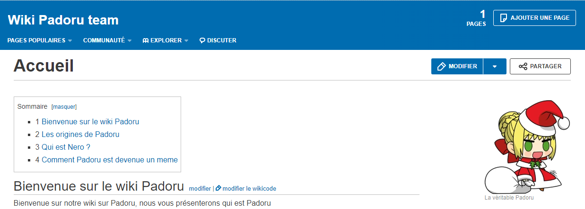
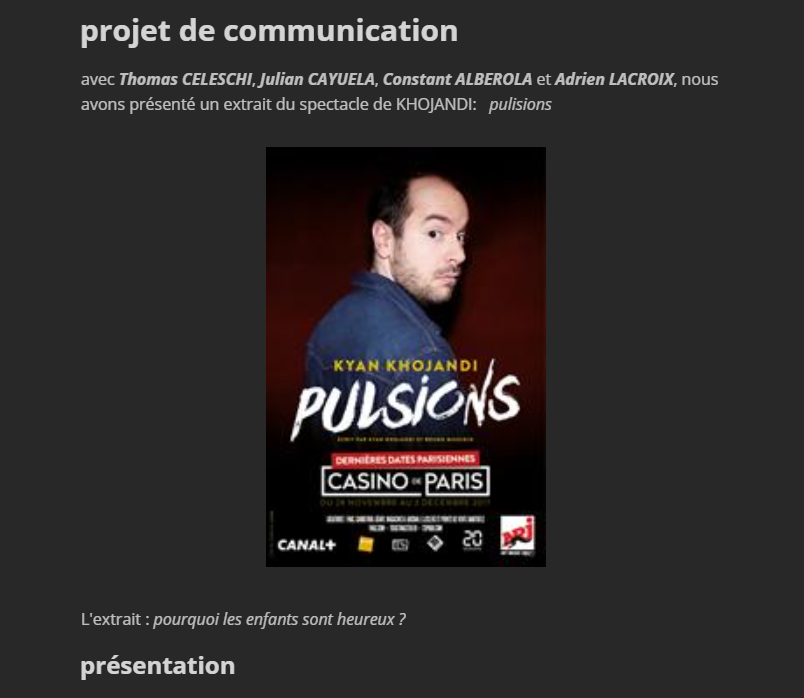
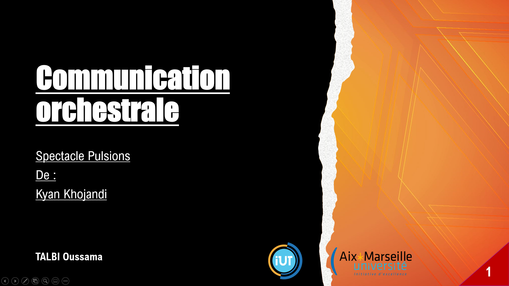

Page de travaux personnels
Dans cette page, vous trouverez un certain nombre de mes travaux.
Ce site a été validé par le w3c validator.

Vous avez la possibilité de changer le thémede la page
Vous trouverez ici le wiki fait par Thomas C. et moi.

Vous trouverez ici un document MarkDown fait par Thomas C. et moi.

Vous pouvez télécharger une présentation de la communication orchestrale que j'ai faite pour le cours de communication.

Vous avez la possibilité de changer le thémede la page